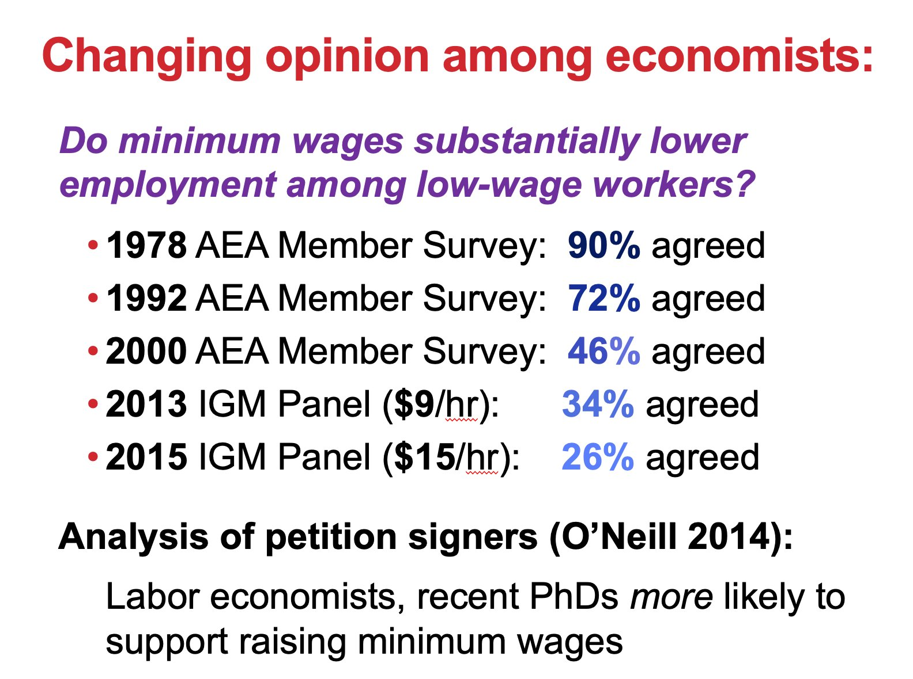
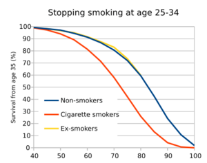
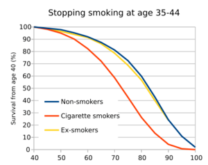
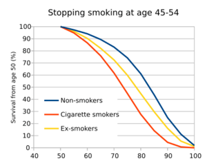
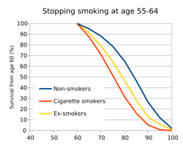
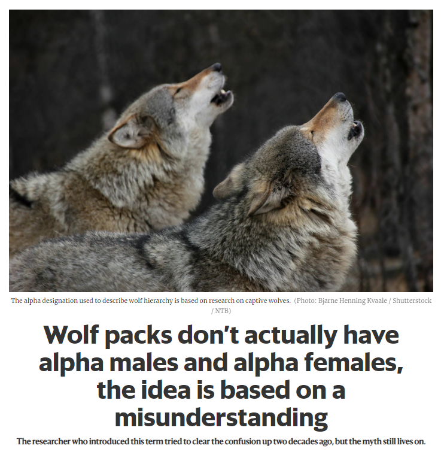
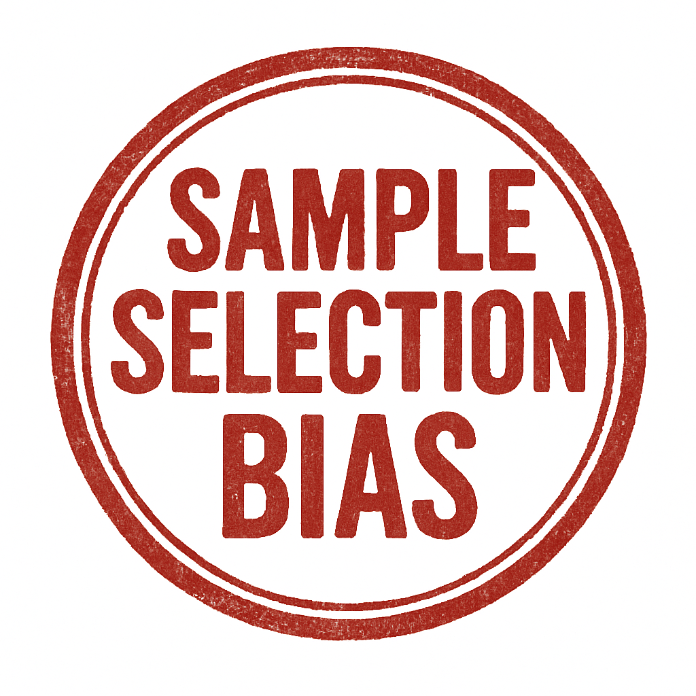
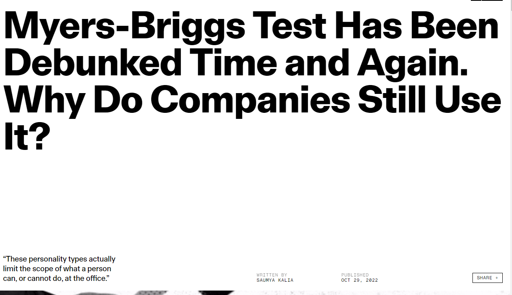
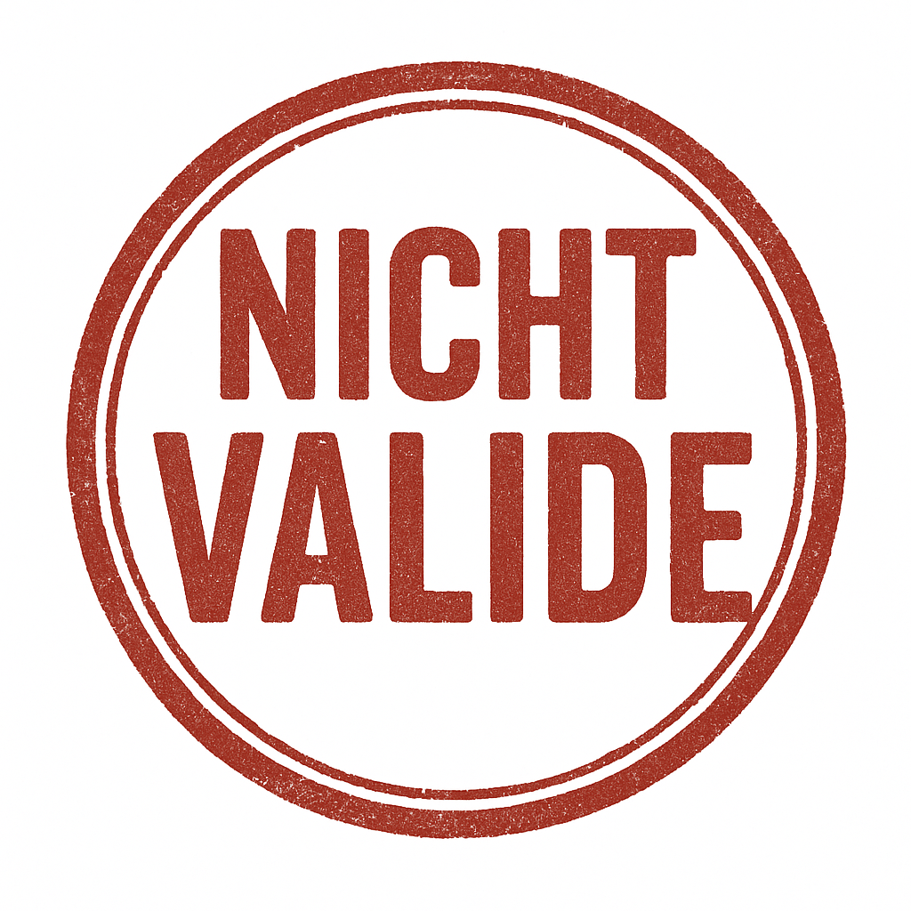
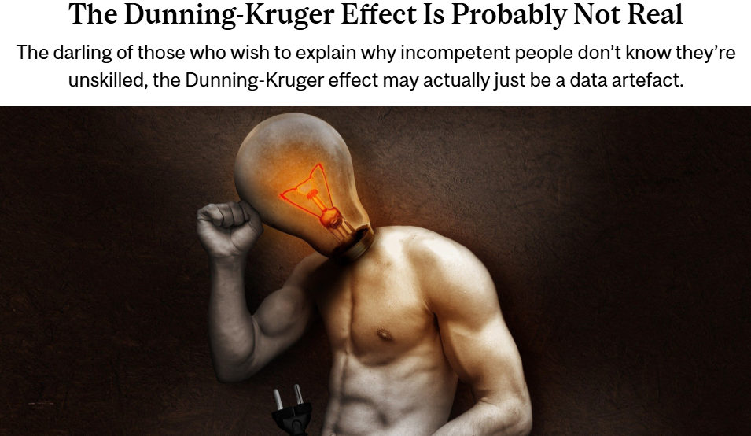

Wissenschaftliche Spielregeln
Wissenschaft heißt Wissen schaffen
Science writing that isn’t credible is science fiction. Credibility goes hand in hand with being concrete. We establish the credibility of our ideas by grounding them in previous work and citing those sources. We establish the credibility of our data by describing our methods, presenting the data clearly, and using appropriate statistics. We establish the credibility of our conclusions by showing that they grow from those credible data. We build a chain that extends from past work into future directions. A break anywhere in that chain makes the whole endeavour lose credibility.
Josha Schimel: Writing Science (2011, 23) (Website des Autors)
Werden Sie ein produktives Mitglied
Wie werden Sie ein produktives Mitglied der wissenschaftlichen Gemeinschaft:
nehmen Sie an einer thematischen Debatte teil, die sich um das Verständnis eines Teils der (sozialen) Welt dreht;
suchen Sie nach Dingen, um die Debatte zu bereichern;
nutzen Sie argumentative Verbesserungen, inhaltliche Anwendungen, Daten und Methoden, um die Debatte zu bereichern;
überzeugen Sie die Debattenteilnehmer:innen, dass ihr Beitrag eine Bereicherung war.
Überzeugend sein
Sie überzeugen andere Teilnehmer:innen, wenn
Sie die gleiche Sprache sprechen wie die Debattenteilnehmer:innen, d.h. die gleichen oder verständliche Begriffe benutzen.
Sie bessere und/oder neue Argumente nutzen.
Sie Daten und Methoden benutzen, die Ihre Argumente oder Behauptungen stützen.
Überzeugend sein mit Daten & Methoden
Um empirisch überzeugend sein zu können, brauchen Sie
gute Daten &
angemessene Methoden &
die Kompetenz, das Verhältnis von Daten, Methoden und Ihren Aussagen zu klären.
Wissenschaftliche Überzeugungen
Wissenschaftliche Debatten sind kumulativ, d.h. sie bauen auf vorherigen wissenschaftlichen Inhalten auf. Daraus folgen wichtige Konsequenzen:
Eine laufende Debatte wird (typischerweise) nicht durch eine einzige Studie völlig anders laufen, denn viele Wissenschaftler:innen sind sehr überzeugt von den Inhalten, die Sie vertreten.
Zeigt eine kritische Masse von Debattenteilnehmer:innen gegenteilige Inhalte zu den bisher vertretenen Inhalten, wird das typischerweise die anderen Teilnehmer:innen überzeugen.
Testen Sie sich selbst
Fragen Sie sich selbst:
Welche (wissenschaftliche) Überzeugung würden Sie immer noch behalten, selbst wenn mehrere neue Studie erscheinen, die das Gegenteil behaupten?
Welche (wissenschaftliche) Überzeugung haben Sie aufgrund gegenteiliger (wissenschaftlicher) Evidenz aufgegeben?
Suchen Sie für beide Punkte Evidenz oder Gegenevidenz.
Erwarten Sie keine Revolutionen!

Verkannte Genies?
- Gerade in Deutschland gibt es eine gewisse “Gier” nach Genies und eine starke Erzählung darüber, dass einige von ihnen verkannt oder sogar unterdrückt werden/wurden.
- Das ist in der Vielzahl aller Fälle falsch und auch schädlich .
- Diese Erzählung führt zu “false balancing” in den Medien und zu Beschreibung von wissenschaftlichem Konsens als “umstritten”.
Gibt es ein gesundes Maß von Rauchverhalten?




War das schon immer so klar?
- Der Nachweis, dass Rauchen Krebs verursacht, war ein wichtiger Beschleuniger für verbesserte Methoden und Daten in den Gesundheitswissenschafte (siehe: Pearl & Mackenzie (2018)).
- Diese Debatte war hoch umkämpft, da unsere Beobachtungen “nur” einen Zusammenhang zwischen dem Rauchverhalten einer Bevölkerung und dem Ausmaß von Lungenkrebs erlauben (siehe: Oreskes & Conaway (2010) ).
- Andere Faktoren (u.a.: Genetik, Umweltverschmutzung, Sporen) verursachen auch Lungenkrebs. Wie können wir uns daher sicher sein, dass Rauchen eine wesentliche Ursache ist?
Wissenschaftliche Verantwortung
Wissenschaftliche Verantwortung
In den vergangenen Jahren hat sich die Verbreitung von Missinformation, fake news und Halbwahrheiten verstärkt. Es ist unsere Verantwortung diese Ausbreitung einzudämmen und nicht aktiv daran teilzunehmen.
Es ist stets schwerer, Missinformation und Unwahrheiten aus der Welt zu bekommen, als sie in die Welt zu setzen. Das wird auch als Brandolinis Gesetz bezeichnet.
Wissenschaftliche Verantwortung
Wir haben daher auf zwei Arten eine Verantwortung:
Calling bullshit: Wir müssen nach bestem Wissen und Gewissen Aufklärungsarbeit leisten. Dazu müssen wir methodisch gesichertes Wissen aufbauen.
Keinen bullshit in die Welt setzen! Dazu müssen wir unsere eigene wissenschaftliche Praxis methodisch so gut wie möglich absichern und wir müssen stets demütig bleiben.
Brandolini in action: The alpha wolf

Das Konzept eines Alpha-Wolfs und einer “pack order” wurde in den 1970er aufgrund der selektiven Beobachtung von Wölfen in Gefangenschaft entwickelt, die kaum familiäre Bindungen hatten.
Natürliche Wolfsrudel sind aber schlicht Familienverbände aus Vaterwolf, Mamawolf und ihren Kindern.
David Mech, der Autor des Buches von 1970, auf dem der Alpha Wolf Mythos basiert, versuchte bis 2020 vergeblich, sein eigenes Buch aus dem Verkehr zu ziehen (mehr hier).

Brandolini in action: Myers-Briggs-Test

Der Myers-Briggs-Test ist ein sehr populärer Persönlichkeitstest in vielen Organisationen zur Einordnung von Kandidaten oder Teammitgliedern.
Führt man mit Personen diesen Test aber wiederholt aus, verändert sich die Einstufung der Persönlichkeit zum Teil drastisch.
Die Einstufungen durch den Test stehen darüber hinaus in keinem Zusammenhang mit Verhaltensweisen und Leistungen von Personen in Organisationen (ausführlicher).

Brandolini in action: Dunning-Kruger-Effekt

Kruger & Dunning (1999) postulierten aufgrund eines (!) Experiments, dass vor allem Personen, die geringe Fähigkeiten haben, die Ausprägung dieser Fähigkeiten bei sich selbst überschätzen.
Die wissenschaftliche Evidenz für diese Behauptung ist extrem dünn (Gignac & Zajenkowski (2020)).